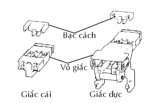
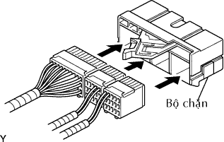
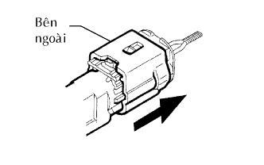

HỆ THỐNG TÚI KHÍ > LƯU Ý |
| Tên hệ thống | Xem quy trình |
| Cụm bảng đồng hồ táplô |
Kích chuột vào đây
|
| 1.NHỮNG CHÚ Ý KHI THAO TÁC VỚI CẢM BIẾN TÚI KHÍ |
Trước khi thay thế cảm biến túi khí, hãy đợi khoảng 90 giây sau khi tháo cáp ra khỏi cực âm (-) của ắc quy.
Khi nối hay tháo giắc cảm biến túi khí, hãy đảm bảo rằng tất cả cảm biến được lắp trên xe.
Không dùng các cảm biến túi khí nếu chúng đã bị rơi.
Không tháo rời các cảm biến túi khí.
| 2.QUY TRÌNH KIỂM TRA XE BỊ TAI NẠN |
Khi túi khí đã phát nổ, hãy kiểm tra DTC bằng đèn báo SRS. Nếu có bất kỳ hư hỏng trong SRS, hãy thực hiện việc chẩn đoán.
Khi có bất kỳ túi khí nào phát nổ, hãy thay thế cảm biến túi khí có liên quan và kiểm tra xem hoạt động của nó có bình thường không.
| 3.CÁC GIẮC NỐI SRS |
| Loại giắc nối | Ứng dụng |
| Cơ cấu khóa kép cực | Các giắc nối 2, 4, 5, 6, 7 |
| Cơ cấu Chống Kích hoạt | Các giắc nối 2, 8, 10, 12, 7 |
| Cơ cấu chống nối lỏng | Các giắc nối 4, 6, 7 |
| Cơ cấu khóa giắc nối | Các giắc nối 9, 11 |
Tất cả các giắc nối trong hệ thống SRS đều có màu vàng (để phân biệt chúng với các giắc nối khác). Một số giắc nối có các chức năng đặc biệt và được thiết kế đặc biệt cho SRS. Những giắc nối dùng các cực có mạ vàng có độ bên cao, và dùng ở những vị trí như trên đây để đảm bảo độ tin cậy cao.
|  |
Cơ cấu khóa kép cực:
Cơ cấu chống kích hoạt:
Cơ cấu chống nối lỏng:
Cơ cấu khóa giắc nối:
| 4.ĐIỀU KIỆN PHÁT NỔ TÚI KHÍ |
Khi xe bị va chạm và chấn động lớn hơn so với mức tiêu chuẩn, SRS được kích hoạt tự động. Cảm biến an toàn và cảm biến gia tốc được lắp trong cảm biến túi khí trung tâm. Cảm biến an toàn được thiết kế để bật ở gia tốc nhỏ hơn so với cảm biến giảm tốc. Cảm biến gia tốc xác định SRS có cần phát nổ hay không dựa trên tín hiệu từ cảm biến túi khí trước. Dòng điện chạy qua ngòi nổ để phát nổ túi khí SRS khi các điều kiện như trong hình vẽ sau thỏa mãn.
| 5.THÁO GIẮC NỐI CHO MẶT VÔLĂNG |
Nhả nút khóa (phần màu vàng) của giắc nối bằng tô vít.
Cắm đầu tôvít vào giữa giắc nối và thân, sau đó cạy giắc nối lên.
| 6.LẮP GIẮC NỐI MẶT VÔLĂNG |
Lắp giắc nối.
Aán cần để nối miếng giữ (với giắc nối). Kiểm tra rằng chúng khóa và nghe thấy tiếng tách.
| 7.THÁO GIẮC NỐI CHO CẢM BIẾN TÚI KHÍ TRUNG TÂM |
Kéo cần bằng cách ấn vào phần A và tháo miếng giữ (với giắc nối).
Thay miếng giữ.
Dùng tôvít, nhả khóa miếng cách.
Nhả lưỡi hãm và tháo giắc nối ra khỏi miếng giữ.
|  |
Lắp các giắc nối vào miếng giữ mới. Kiểm tra rằng chúng khóa và nghe thấy tiếng tách.
Khóa miếng cách.
| 8.LẮP GIẮC NỐI CẢM BIẾN TÚI KHÍ TRUNG TÂM |
Cắm chặt miếng giữ (có giắc nối) cho đến khi nó không thể ấn vào thêm nữa.
Aán cần để nối miếng giữ (với giắc nối). Kiểm tra rằng chúng khóa và nghe thấy tiếng tách.
| 9.THÁO GIẮC NỐI CHO CẢM BIẾN TÚI KHÍ TRƯỚC (TRÁI VÀ PHẢI) |
|  |
Cầm vào hai phía bên ngoài và trượt nó như trong hình vẽ để nhả khóa giắc nối.
Ngắt giắc nối.
| 10.LẮP GIẮC NỐI CẢM BIẾN TÚI KHÍ TRƯỚC (TRÁI VÀ PHẢI) |
Nối giắc nối như trong hình vẽ. Kiểm tra rằng nó khóa và nghe thấy tiếng tách.